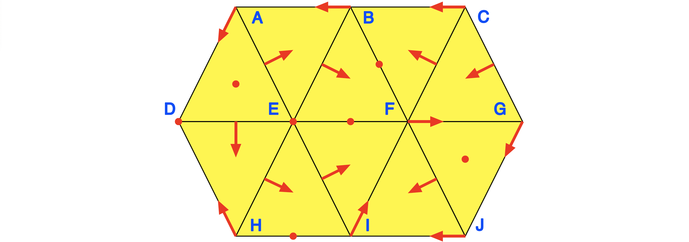
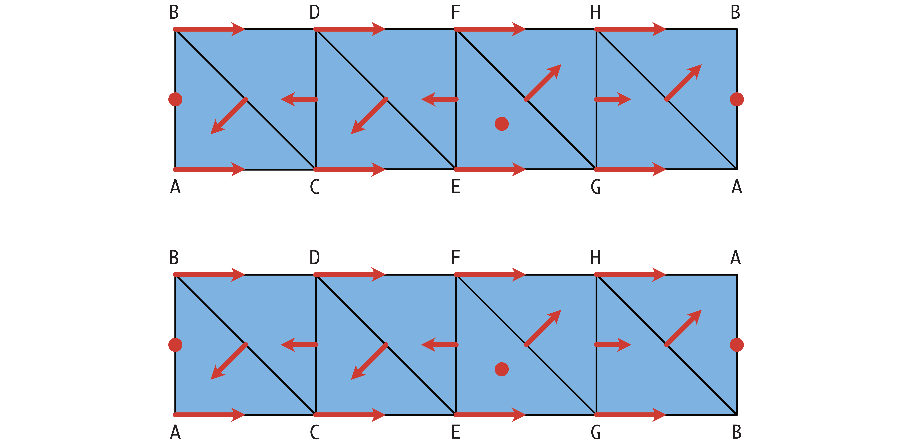

Examples
In order to illustrate the basic functionality of ConleyDynamics.jl, this section collects a number of examples. Many of these are taken from the paper [BKMW20] and the book [MW25], and they consider both Forman vector fields and general multivector fields on a variety of Lefschetz complexes. Each example has its own associated function, so that users can quickly create examples on their own by taking the respective source files as templates.
A One-Dimensional Forman Field
Our first example is taken from [BKMW20, Figure 1], and it is a Forman vector field on a one-dimensional simplicial complex as shown in the figure.
The simplicial complex and Forman vector field can be created using the function example_forman1d:
ConleyDynamics.example_forman1d — Methodlc, mvf, coords = example_forman1d()Create the simplicial complex and multivector field for the example from Figure 1 in the FoCM 2020 paper by Batko, Kaczynski, Mrozek, and Wanner.
The function returns the Lefschetz complex lc and the multivector field mvf. If desired for plotting, the third return value coords gives a vector of coordinates for the vertices. The Lefschetz complex is defined over the finite field GF(2).
Examples
julia> lc, mvf = example_forman1d();
julia> cm = connection_matrix(lc, mvf);
julia> sparse_show(cm.matrix)
[0 0 0 0 1]
[0 0 0 0 0]
[0 0 0 0 1]
[0 0 0 0 0]
[0 0 0 0 0]
julia> print(cm.labels)
["A", "AD", "F", "BF", "DE"]The commands from the docstring show that the connection matrix has five rows and columns. The last three of these correspond to the critical cells $\mathrm{F}$, $\mathrm{BF}$, and $\mathrm{DE}$, while the first two correspond to the two generators of the homological Conley index of the periodic orbit, given by $\mathrm{A}$ and $\mathrm{AD}$.
The full Morse decomposition of this combinatorial dynamical system is depicted in the second figure, and all four Morse set are indicated in the simplicial complex by different colors. They are also listed, together with their Conley indices, in the following Julia output:
julia> cm.morse
4-element Vector{Vector{String}}:
["A", "C", "D", "AC", "AD", "CD"]
["F"]
["BF"]
["DE"]
julia> cm.conley
4-element Vector{Vector{Int64}}:
[1, 1]
[1, 0]
[0, 1]
[0, 1]Notice that only two heteroclinic orbits are reflected in the connection matrix. These are the connections between the unstable cell $\mathrm{DE}$ and both the equilibrium $\mathrm{F}$ and the periodic orbit. In contrast, the two heteroclinics between the index one cell $\mathrm{BF}$ and $\mathrm{F}$ cancel algebraically.
A Planar Forman Vector Field
Our second example was originally discussed in the context of [BKMW20, Figure 3], and it consists of a Forman vector field on a topological disk, as shown in the associated figure.

The disk is represented as a simplicial complex with 10 vertices, 19 edges, and 10 triangles. The Forman vector field has 7 critical cells, and 16 arrows. Both the simplicial complex and the Forman vector field can be defined using the function example_forman2d:
ConleyDynamics.example_forman2d — Methodlc, mvf, coords = example_forman2d()Create the simplicial complex and multivector field for the example from Figure 3 in the FoCM 2020 paper by Batko, Kaczynski, Mrozek, and Wanner.
The function returns the Lefschetz complex lc over the finite field GF(2) and the multivector field mvf. If desired for plotting, the third return value coords gives a vector of coordinates for the vertices.
Examples
julia> lc, mvf = example_forman2d();
julia> cm = connection_matrix(lc, mvf);
julia> sparse_show(cm.matrix)
[0 0 0 0 1 0 1 0 0]
[0 0 0 0 0 1 0 0 0]
[0 0 0 0 1 1 1 0 0]
[0 0 0 0 0 0 0 0 1]
[0 0 0 0 0 0 0 1 0]
[0 0 0 0 0 0 0 0 0]
[0 0 0 0 0 0 0 1 0]
[0 0 0 0 0 0 0 0 0]
[0 0 0 0 0 0 0 0 0]
julia> print(cm.labels)
["D", "E", "F", "GJ", "BF", "EF", "HI", "ADE", "FGJ"]
The Morse decomposition of this example is shown in the second figure. Its eight Morse sets and associated Conley indices are given by
julia> cm.morse
8-element Vector{Vector{String}}:
["D"]
["E"]
["F", "G", "I", "J", "FG", "FI", "GJ", "IJ"]
["BF"]
["EF"]
["HI"]
["ADE"]
["FGJ"]
julia> cm.conley
8-element Vector{Vector{Int64}}:
[1, 0, 0]
[1, 0, 0]
[1, 1, 0]
[0, 1, 0]
[0, 1, 0]
[0, 1, 0]
[0, 0, 1]
[0, 0, 1]We would like to point out that the collection of Morse sets does not in general encompass all possible isolated invariant sets for the combinatorial dynamical system. Consider for example the set $S$ shown in light blue in the next figure.

Its mouth is depicted in dark blue, and it is clearly closed. In addition, the set $S$ decomposes into arrows and critical cells, and one can show that it is invariant. Thus, it is in fact an isolated invariant set for this Forman vector field. Note also that this cell does not correspond to an interval in the Conley-Morse graph either, and this is indicated via gray shading in the above image of the graph. The set $S$, together with its closure and its mouth, can be generated using the following commands:
S = ["ADE","DEH","EFI","EHI",
"DE","EF","EH","EI","FG","FI","GJ","HI","IJ",
"F","G","I","J"]
clS, moS = lefschetz_clomo_pair(lc,S)Then the Conley index of $S$ is given by
julia> conley_index(lc,S)
3-element Vector{Int64}:
0
1
0
julia> relative_homology(lc,clS,moS)
3-element Vector{Int64}:
0
1
0Notice that this is the same as the relative homology of the pair $(\mathrm{cl}\, S, \mathrm{mo}\, S)$, as expected.
The Multivector Field from the Logo
This example is taken from [MW25, Figure 2.1], and it is visualized in the accompanying figure.

Clearly, this is the multivector field from the ConleyDynamics.jl logo. Since it was already discussed in detail in the Tutorial, we only show how the underlying simplicial complex and the multivector field can be created quickly using the function example_julia_logo:
ConleyDynamics.example_julia_logo — Methodlc, mvf = example_julia_logo()Create the simplicial complex and multivector field for the example from Figure 1 in the connection matrix paper by Mrozek & Wanner.
The function returns the Lefschetz complex lc over GF(2) and the multivector field mvf.
Examples
julia> lc, mvf = example_julia_logo();
julia> cm = connection_matrix(lc, mvf);
julia> sparse_show(cm.matrix)
[0 0 0]
[0 0 1]
[0 0 0]
julia> print(cm.labels)
["D", "AC", "ABC"]The Morse sets and associated Conley indices can be accessed using the commands:
julia> cm.morse
3-element Vector{Vector{String}}:
["D"]
["A", "B", "C", "AB", "AC", "BC", "BD", "CD", "BCD"]
["ABC"]
julia> cm.conley
3-element Vector{Vector{Int64}}:
[1, 0, 0]
[0, 1, 0]
[0, 0, 1]Notice that in this example, every simplex of the underlying simplicial complex is contained in one of the Morse sets.
Critical Flow on a Simplex
The next example considers the arguably simplest situation of a Forman vector field on a simplicial complex. The simplicial complex $X$ is given by a single simplex of dimension $n$, together with all its faces, while the Forman vector field on $X$ contains only singletons. In other words, every simplex in the complex is a critical cell. Thus, this combinatorial dynamical system has one equilibrium of index $n$, and $n+1$ stable equilibria. In addition, there are $2^{n+1} - n - 3$ additional stationary states whose indices lie strictly between $0$ and $n$, as well as a wealth of algebraically induced heteroclinic orbits. All of these can be found by using the connection matrix for the problem, as outlined in the following description for the function example_critical_simplex.
ConleyDynamics.example_critical_simplex — Methodlc, mvf = example_critical_simplex(dim)Create a simplicial complex of dimension dim as well as a multivector field on it in which every cell is critical.
The function returns the Lefschetz complex lc over GF(2) and the multivector field mvf.
Examples
julia> lc, mvf = example_critical_simplex(2);
julia> cm = connection_matrix(lc, mvf);
julia> sparse_show(cm.matrix)
[0 0 0 1 1 0 0]
[0 0 0 1 0 1 0]
[0 0 0 0 1 1 0]
[0 0 0 0 0 0 1]
[0 0 0 0 0 0 1]
[0 0 0 0 0 0 1]
[0 0 0 0 0 0 0]
julia> print(cm.labels)
["A", "B", "C", "AB", "AC", "BC", "ABC"]Flow on a Cylinder and a Moebius Strip
The next example considers again Forman vector fields, but this time on a cylinder and on a Moebius strip. The underlying simplicial complexes are given by a horizontal strip of eight triangles, whose left and right vertical edges are identified. For the first complex lc1 these edges are identified without twist, while for the complex lc2 they are twisted. See also the labels in the figure.

Both complexes consist of eight vertices, sixteen edges, and eight triangles. The two complexes and Forman vector fields can be generated using the function example_critical_simplex, whose usage can be described as follows.
ConleyDynamics.example_moebius — Functionlc1, mvf1, lc2, mvf2 = example_moebius(p)Create two simplicial complexes for a cylinder and Moebius strip, respectively, together with associated multivector fields on them.
The function returns the Lefschetz complexes lc1 and lc2, as well as the multivector fields mvf1 and mvf2. Both complexes are over a field with characteristic p. Positive prime characteristic uses the finite field GF(p), while zero characteristic gives the rationals.
The multivector field is the same, and it has one critical cell each in dimension 1 and 2 in the interior of the strip. The boundary consists of two periodic orbits for lc1 and mvf1, and of one periodic orbit in the Moebius case lc2 and mvf2. The latter case leads to different connection matrices for the fields GF(2) and GF(7), for example.
Examples
julia> lc1, mvf1, lc2, mvf2 = example_moebius(0);
julia> lc2p2 = lefschetz_gfp_conversion(lc2,2);
julia> lc2p7 = lefschetz_gfp_conversion(lc2,7);
julia> cmp2 = connection_matrix(lc2p2, mvf2);
julia> cmp7 = connection_matrix(lc2p7, mvf2);
julia> sparse_show(cmp2.matrix)
[0 0 0 0]
[0 0 0 1]
[0 0 0 0]
[0 0 0 0]
julia> sparse_show(cmp7.matrix)
[0 0 0 0]
[0 0 0 1]
[0 0 0 2]
[0 0 0 0]Note that for the combinatorial flow on the Moebius strip lc2 the choice of field characteristic $p$ leads to potentially different connection matrices. While for characteristic $p=2$ the connection matrix has only one nontrivial entry, it has two for $p=7$.
We only briefly include some sample computations for the latter case. One can create the complexes, Forman vector fields, and associated connection matrices for $p=7$ using the following commands:
lc1, mvf1, lc2, mvf2 = example_moebius(7)
cm1 = connection_matrix(lc1,mvf1)
cm2 = connection_matrix(lc2,mvf2)For the first example, the combinatorial flow on the cylinder has four Morse sets. Two critical equilibria of indices 1 and 2, as well as two periodic orbits. This can be shown as follows:
julia> cm1.morse
4-element Vector{Vector{String}}:
["A", "C", "E", "G", "AC", "AG", "CE", "EG"]
["B", "D", "F", "H", "BD", "BH", "DF", "FH"]
["AB"]
["EFG"]
julia> cm1.conley
4-element Vector{Vector{Int64}}:
[1, 1, 0]
[1, 1, 0]
[0, 1, 0]
[0, 0, 1]
julia> sparse_show(cm1.matrix)
[0 0 0 0 6 0]
[0 0 0 0 0 1]
[0 0 0 0 1 0]
[0 0 0 0 0 6]
[0 0 0 0 0 0]
[0 0 0 0 0 0]
julia> print(cm1.labels)
["A", "AG", "B", "BH", "AB", "EFG"]In fact, the connection matrix implies the existence of connecting orbits from both the index 2 and the index 1 equilibrium to the two periodic orbits. The connections between the stationary states cannot be detected algebraically.
For the second example, the combinatorial flow on the Moebius strip, one only obtains three Morse sets. This time, there is only one periodic orbit which loops around both the top and bottom edges in the figure. This is confirmed by the commands
julia> cm2.morse
3-element Vector{Vector{String}}:
["A", "B", "C", "D", "E", "F", "G", "H", "AC", "AH", "BD", "BG", "CE", "DF", "EG", "FH"]
["AB"]
["EFG"]
julia> cm2.conley
3-element Vector{Vector{Int64}}:
[1, 1, 0]
[0, 1, 0]
[0, 0, 1]
julia> sparse_show(cm2.matrix)
[0 0 0 0]
[0 0 0 1]
[0 0 0 2]
[0 0 0 0]
julia> print(cm2.labels)
["A", "BG", "AB", "EFG"]In this case, the connection matrix is able to identify the connecting orbits between the index 2 stationary state and both the periodic orbit and the index 1 equilibrium. The latter one is not recognized over the field $GF(2)$.
Nonunique Connection Matrices
Our next example is concerned with another Forman vector field, but this time on a larger simplicial complex, as shown in the figure.
The simplicial complex is topologically a disk, and it consists of 9 vertices, 18 edges, and 10 triangles. The Forman vector field has 1 critical vertex, 3 critical edges, and 3 critical triangles, as well as 15 Forman arrows. The following example shows that for this combinatorial dynamical system, there are two fundamentally different connection matrices.
ConleyDynamics.example_nonunique — Methodlc1, lc2, mvf, coords1, coords2 = example_nonunique()Create two representations of a simplicial complex and one multivector field which illustrates nonunique connection matrices.
The two complexes lc1 and lc2 represent the same simplicial complex over GF(2), but differ in the ordering of the labels.
The function returns the Lefschetz complexes lc1 and lc2, as well as the multivector field mvf. If desired for plotting, the fourth and fifth return values coords1 and coords2 give vectors of coordinates for the vertices of the two complexes.
Examples
julia> lc1, lc2, mvf = example_nonunique();
julia> cm1 = connection_matrix(lc1, mvf);
julia> cm2 = connection_matrix(lc2, mvf);
julia> sparse_show(cm1.matrix)
[0 0 0 1 0 1 0 0 0]
[0 0 0 1 0 1 0 0 0]
[0 0 0 0 0 0 0 1 1]
[0 0 0 0 0 0 1 1 0]
[0 0 0 0 0 0 0 1 0]
[0 0 0 0 0 0 1 1 0]
[0 0 0 0 0 0 0 0 0]
[0 0 0 0 0 0 0 0 0]
[0 0 0 0 0 0 0 0 0]
julia> print(cm1.labels)
["2", "7", "79", "29", "45", "67", "168", "349", "789"]
julia> sparse_show(cm2.matrix)
[0 0 0 1 0 1 0 0 0]
[0 0 0 1 0 1 0 0 0]
[0 0 0 0 0 0 1 0 1]
[0 0 0 0 0 0 1 1 0]
[0 0 0 0 0 0 0 1 0]
[0 0 0 0 0 0 1 1 0]
[0 0 0 0 0 0 0 0 0]
[0 0 0 0 0 0 0 0 0]
[0 0 0 0 0 0 0 0 0]
julia> print(cm2.labels)
["2", "8", "78", "29", "45", "67", "168", "349", "789"]As mentioned in the docstring for the function example_nonunique, the two Lefschetz complexes lc1 and lc2 both represent the above simplicial complex. However, they differ in the ordering of the vertex labels. This can be seen from the commands
julia> print(lc1.labels[1:9])
["1", "2", "3", "4", "5", "6", "7", "8", "9"]
julia> print(lc2.labels[1:9])
["1", "2", "3", "4", "5", "6", "8", "9", "7"]In other words, lc1 and lc2 are different representations of the same complex. Nevertheless, computing the connection matrices as in the example gives two distinct connection matrices. This is purely a consequence of the different ordering of the rows and columns in the boundary matrix.
To shed further light on this issue, notice that the triangle at the center of the complex forms an attracting periodic orbit, whose Conley index has Betti numbers 1 in dimensions 0 and 1. One can break this periodic orbit by removing one of its three arrows, and replacing it with two critical cells of dimensions 0 and 1. The next image shows two different ways of doing this.
In the image on the left, the vector ["7", "79"] is removed, while the one on the right breaks up ["8", "78"]. The corresponding modified Forman vector fields, and their connection matrices, can be created as follows:
mvf1 = deepcopy(mvf);
mvf2 = deepcopy(mvf);
deleteat!(mvf1,6);
deleteat!(mvf2,8);
cm1mod = connection_matrix(lc1, mvf1);
cm2mod = connection_matrix(lc2, mvf2);Both of the new Forman vector fields are gradient vector fields, and in view of a result in [MW25], their connection matrices are therefore uniquely determined. The connection matrix for the vector field mvf1 is of the form
julia> sparse_show(cm1mod.matrix)
[0 0 1 0 1 0 0 0 0]
[0 0 1 0 1 0 0 0 0]
[0 0 0 0 0 0 1 1 0]
[0 0 0 0 0 0 0 1 0]
[0 0 0 0 0 0 1 1 0]
[0 0 0 0 0 0 0 1 1]
[0 0 0 0 0 0 0 0 0]
[0 0 0 0 0 0 0 0 0]
[0 0 0 0 0 0 0 0 0]
julia> print(cm1mod.labels)
["2", "7", "29", "45", "67", "79", "168", "349", "789"]Notice that this matrix shows that there is a connection from the triangle 349 to the edge 79, but there are no connections from the triangle 168 to the critical edge on the center triangle. In fact, up to reordering the columns and rows, this connection matrix is the same as cm1 in the example.
Similarly, the connection matrix for the second modified Forman vector field mvf2 is uniquely determined, and it is given by
julia> sparse_show(cm2mod.matrix)
[0 0 1 0 1 0 0 0 0]
[0 0 1 0 1 0 0 0 0]
[0 0 0 0 0 0 1 1 0]
[0 0 0 0 0 0 0 1 0]
[0 0 0 0 0 0 1 1 0]
[0 0 0 0 0 0 1 0 1]
[0 0 0 0 0 0 0 0 0]
[0 0 0 0 0 0 0 0 0]
[0 0 0 0 0 0 0 0 0]
julia> print(cm2mod.labels)
["2", "8", "29", "45", "67", "78", "168", "349", "789"]Now there is a connection from the triangle 168 to the edge 78, but there are no connections from the triangle 349 to the critical edge on the center triangle. This time, up to a permutation of the columns and the rows, this connection matrix is the same as cm2 in the example.
Forcing Three Connection Matrices
The next example is taken from [MW25, Figure 2.2], and it revolves around the combinatorial vector field on a simplicial complex shown in the top left part of the figure.
This combinatorial vector field is again of Forman type. It has a periodic orbit, which is shown in yellow in the top right part of the figure. In addition to three index 1 equilibria, there are two of index 2. The top right part shows that from these two index 2 cells there are a combined total of five connecting orbits to the index 1 cells and to the periodic orbit. Its Morse decomposition is shown in the lower part of the figure. While the Morse sets are indicated by different colors, the Conley-Morse graph is shown on the lower right.
As the following docstring for example_three_cm demonstrates, the connection matrix, which this time is computed over the rationals $\mathbb{Q}$, only identifies three of the five connecting orbits between index 2 invariant sets and index 1 sets.
ConleyDynamics.example_three_cm — Methodlc, mvf, coords = example_three_cm(mvftype)Create the simplicial complex and multivector field for the example from Figure 2 in the connection matrix paper by Mrozek & Wanner.
Depending on the value of mvftype, return the periodic orbit (0=default) or one of the three gradient (1,2,3) examples.
The function returns the Lefschetz complex lc over the rational field and the multivector field mvf. If desired for plotting, the third return value coords gives a vector of coordinates for the vertices.
Examples
julia> lc, mvf = example_three_cm(0);
julia> cm = connection_matrix(lc, mvf);
julia> print(cm.labels)
["A", "C", "CE", "AC", "BD", "DF", "ABC", "EFG"]
julia> full_from_sparse(cm.matrix)
8×8 Matrix{Rational{Int64}}:
0 0 0 -1 -1 0 0 0
0 0 0 1 1 0 0 0
0 0 0 0 0 0 0 0
0 0 0 0 0 0 -1 0
0 0 0 0 0 0 1 0
0 0 0 0 0 0 0 1
0 0 0 0 0 0 0 0
0 0 0 0 0 0 0 0It turns out that this combinatorial dynamical system has multiple possible connection matrices as well. In fact, it has three. In order to find them we use the same approach as in the last example, and break the periodic orbit by turning one of its arrows into two critical cells. Since there are three arrows in the periodic orbit, this can be accomplished in three different ways. They are indicated in the next figure.

The resulting Forman vector fields are all of gradient type, and therefore have a unique connection matrix. These three vector fields can be obtained via the function example_three_cm by specifying the integer argument as 1, 2, or 3. For the first vector field one obtains the following connection matrix:
julia> lc1, mvf1 = example_three_cm(1);
julia> cm1 = connection_matrix(lc1, mvf1);
julia> print(cm1.labels)
["A", "C", "AC", "BD", "CD", "DF", "ABC", "EFG"]
julia> full_from_sparse(cm1.matrix)
8×8 Matrix{Rational{Int64}}:
0 0 -1 -1 0 0 0 0
0 0 1 1 0 0 0 0
0 0 0 0 0 0 -1 0
0 0 0 0 0 0 1 0
0 0 0 0 0 0 -1 0
0 0 0 0 0 0 0 1
0 0 0 0 0 0 0 0
0 0 0 0 0 0 0 0In contrast, the second vector field leads to:
julia> lc2, mvf2 = example_three_cm(2);
julia> cm2 = connection_matrix(lc2, mvf2);
julia> print(cm2.labels)
["A", "D", "AC", "BD", "DE", "DF", "ABC", "EFG"]
julia> full_from_sparse(cm2.matrix)
8×8 Matrix{Rational{Int64}}:
0 0 -1 -1 0 0 0 0
0 0 1 1 0 0 0 0
0 0 0 0 0 0 -1 0
0 0 0 0 0 0 1 0
0 0 0 0 0 0 0 -1
0 0 0 0 0 0 0 1
0 0 0 0 0 0 0 0
0 0 0 0 0 0 0 0Finally, the third gradient vector field gives:
julia> lc3, mvf3 = example_three_cm(3);
julia> cm3 = connection_matrix(lc3, mvf3);
julia> print(cm3.labels)
["A", "E", "AC", "BD", "CE", "DF", "ABC", "EFG"]
julia> full_from_sparse(cm3.matrix)
8×8 Matrix{Rational{Int64}}:
0 0 -1 -1 0 0 0 0
0 0 1 1 0 0 0 0
0 0 0 0 0 0 -1 0
0 0 0 0 0 0 1 0
0 0 0 0 0 0 0 0
0 0 0 0 0 0 0 1
0 0 0 0 0 0 0 0
0 0 0 0 0 0 0 0This is finally the connection matrix that was originally returned for the Forman vector field with periodic orbit. One could have obtained the remaining two also through cell permutations.
Notice that these three matrices combined do identify all of the above connections. It was shown in [MW25] that these matrices are different connection matrices for the original Forman vector field with periodic orbit, as long as the newly introduced index 1 and 0 equilibria are identified with the Conley index of the periodic solution. For the sake of completeness, the next figure shows the Morse decompositions for all three combinatorial gradient flows. In the Conley-Morse graphs, blue arrows correspond to the heteroclinic orbits that are identified by the associated connection matrix.
In the Conley-Morse graphs, we used the same color yellow for the two Morse sets that are generated by breaking the periodic orbit through the introduction of two critical cells. It can be seen from the images that while the actual Morse set structure stays fixed, the poset order in the Conley-Morse graphs changes from case to case.
A Lefschetz Multiflow Example
The next example is taken from [MW25, Figure 2.3], and it is a combinatorial multivector field on a true Lefschetz complex, as shown in the left panel of the associated figure.
The example is a combinatorial representation of the multiflow shown on the right, which features nonunique forward dynamics at the point labeled $5$. Note that the underlying Lefschetz complex is defined as the subset of the depicted simplicial complex, where the vertices $\mathrm{A}$, $\mathrm{B}$, $\mathrm{D}$, $\mathrm{E}$, and $\mathrm{F}$ have been removed. This Lefschetz complex lc and the depicted multivector field mvf can be created using the function example_multiflow:
ConleyDynamics.example_multiflow — Methodlc, mvf = example_multiflow()Create the Lefschetz complex and multivector field for the example from Figure 3 in the connection matrix paper by Mrozek & Wanner.
The function returns the Lefschetz complex lc over GF(2) and the multivector field mvf.
Examples
julia> lc, mvf = example_multiflow();
julia> cm = connection_matrix(lc, mvf);
julia> sparse_show(cm.matrix)
[0 0 0 0]
[0 0 0 0]
[0 0 0 0]
[0 0 0 0]
julia> print(cm.labels)
["BD", "DF", "AC", "CE"]As the docstring shows, this example has a trivial connection matrix. In other words, there are no connecting orbits in this combinatorial dynamical system that are forced by topology. In fact, one can easily see that due to the multivalued nature of the dynamical system, one cannot expect any particular heteroclinic to be present.
The Morse decomposition of the system, and the associated Conley indices encompass precisely the four critical edges:
julia> cm.morse
4-element Vector{Vector{String}}:
["BD"]
["DF"]
["AC"]
["CE"]
julia> cm.conley
4-element Vector{Vector{Int64}}:
[0, 1, 0]
[0, 1, 0]
[0, 1, 0]
[0, 1, 0]Combined with the fact that the connection matrix is trivial, this means that the homology of the underlying Lefschetz complex lc is the sum of the Conley indices of the Morse sets. This can be confirmed using the function homology:
julia> homology(lc)
3-element Vector{Int64}:
0
4
0As we mentioned earlier, this is the same as the relative homology of the full simplicial complex with respect to the union of the five removed vertices.
Small Complex with Periodicity
In [MW25, Figure 2.4] we introduced a small Lefschetz complex with periodic orbit and nonunique connection matrices. This complex consists of one 2-cell, three 1-cells, and two 0-cells, and it is shown in the leftmost panel of the figure.
On the complex, consider the multivector field depicted in the middle of the figure, which consists of the critical cells $\alpha$ and $b$, as well as the two regular multivectors $\{ A, a \}$ and $\{ B, c \}$. For this small example, one can easily determine the Morse decomposition, and it is shown in the rightmost panel. The example can be generated in ConleyDynamics.jl using the function example_small_periodicity:
ConleyDynamics.example_small_periodicity — Methodlc1, lc2, mvf = example_small_periodicity()Create two representations of the Lefschetz complex and the multivector field for the example from Figure 4 in the connection matrix paper by Mrozek & Wanner.
The complexes lc1 and lc2 are just two representations of the same complex, but they lead to different connection matrices. Both Lefschetz complexes are defined over the finite field GF(2).
The function returns the Lefschetz complexes lc1 and lc2, as well as the multivector field mvf.
Examples
julia> lc1, lc2, mvf = example_small_periodicity();
julia> cm1 = connection_matrix(lc1, mvf);
julia> cm2 = connection_matrix(lc2, mvf);
julia> full_from_sparse(cm1.matrix)
4×4 Matrix{Int64}:
0 0 0 0
0 0 0 1
0 0 0 1
0 0 0 0
julia> print(cm1.labels)
["A", "a", "b", "alpha"]
julia> full_from_sparse(cm2.matrix)
4×4 Matrix{Int64}:
0 0 0 0
0 0 0 0
0 0 0 1
0 0 0 0
julia> print(cm2.labels)
["A", "c", "b", "alpha"]The function provides two different representations of the same Lefschetz complex, which only differ in the ordering of the 1-cells. This can be seen from the commands:
julia> print(lc1.labels)
["A", "B", "a", "b", "c", "alpha"]
julia> print(lc2.labels)
["A", "B", "c", "a", "b", "alpha"]As the above docstring shows, these different versions lead to two different connection matrices cm1 and cm2.

In this small example, one can easily determine the connection matrices directly, as illustrated in the second figure. While the detailed explanation can be found in [MW25], this is basically accomplished by contracting one of the two regular multivectors in a process called elementary reduction. While the details of this approach are described in [KMS98], it relies on identifying a reduction pair, which contains a cell and one of its faces of one dimension less. These two cells are then removed from the Lefschetz complex and the boundary is modified in such a way that the new smaller complex still has the same homology as the previous one. If in our above example one uses the reduction pair $\{ B, c \}$, then the boundary matrix of the reduced Lefschetz complex is the connection matrix cm1, while cm2 is the result of using the reduction pair $\{ A, a \}$. These manipulations can be done in ConleyDynamics.jl using the function lefschetz_reduction:
julia> rc1 = lefschetz_reduction(lc1, "B", "c");
julia> rc2 = lefschetz_reduction(lc1, "A", "a");These two commands compute the reduced Lefschetz complexes rc1 and rc2 for the respective elementary reduction pairs $\{ B, c \}$ and $\{ A, a \}$. As the following commands show, the first one leads to our earlier connection matrix cm1:
julia> full_from_sparse(rc1.boundary)
4×4 Matrix{Int64}:
0 0 0 0
0 0 0 1
0 0 0 1
0 0 0 0
julia> println(rc1.labels)
["A", "a", "b", "alpha"]Similarly, the connection matrix cm2 is the result of the second reduction:
julia> full_from_sparse(rc2.boundary)
4×4 Matrix{Int64}:
0 0 0 0
0 0 0 1
0 0 0 0
0 0 0 0
julia> println(rc2.labels)
["B", "b", "c", "alpha"]Subdividing a Multivector
Our next example taken from [MW25] is concerned with turning a given multivector field into a Forman vector field by further subdividing the multivectors. For this, consider the three complexes and combinatorial vector fields shown in the associated figure, see also [MW25, Figure 7.1].
The depicted combinatorial dynamical systems all use the same Lefschetz complex, which is obtained from a simplicial complex by removing two vertices. In addition to the multivector field shown in the leftmost panel, we also consider two Forman vector fields. Notice that the multivector field has one multivector of size four, which is given by $\{ \mathrm{C}, \mathrm{AC}, \mathrm{BC}, \mathrm{ABC} \}$. This vector can be split into two Forman arrows, and in view of the required local closedness this can be achieved in precisely two ways. The splitting into the arrows $\{ \mathrm{C}, \mathrm{AC} \}$ and $\{ \mathrm{BC}, \mathrm{ABC} \}$ gives the Forman vector field shown in the middle panel, while the one depicted in the rightmost panel uses the arrows $\{ \mathrm{C}, \mathrm{BC} \}$ and $\{ \mathrm{AC}, \mathrm{ABC} \}$. These fields can be created using the function example_subdivision:
ConleyDynamics.example_subdivision — Methodlc, mvf = example_subdivision(mvftype)Create the Lefschetz complex and multivector field for the example from Figure 11 in the connection matrix paper by Mrozek & Wanner.
Depending on the value of mvftype, return the multivector (0=default) or one of the two combinatorial vector field (1,2) examples.
The function returns the Lefschetz complex lc over the rationals and the multivector field mvf.
Examples
julia> lc, mvf = example_subdivision(1);
julia> cm = connection_matrix(lc, mvf);
julia> full_from_sparse(cm.matrix)
5×5 Matrix{Rational{Int64}}:
0 0 -1 -1 -1
0 0 1 0 0
0 0 0 0 0
0 0 0 0 0
0 0 0 0 0The different combinatorial vector fields can be selected via the function argument, which is an integer between 0 and 2, from left to right in the figure. Thus, all fields and connection matrices can be computed using the commands
lc0, mvf0 = example_subdivision(0)
lc1, mvf1 = example_subdivision(1)
lc2, mvf2 = example_subdivision(2)
cm0 = connection_matrix(lc0,mvf0)
cm1 = connection_matrix(lc1,mvf1)
cm2 = connection_matrix(lc2,mvf2)All three vector fields give rise to the same Morse decomposition, since in each case the vectors of length at least two are regular. This can be seen for the multivector field below, and is analogous for the two Forman vector fields.
julia> cm0.morse
5-element Vector{Vector{String}}:
["A"]
["B"]
["AB"]
["CD"]
["CE"]
julia> cm0.conley
5-element Vector{Vector{Int64}}:
[1, 0, 0]
[1, 0, 0]
[0, 1, 0]
[0, 1, 0]
[0, 1, 0]The three connection matrices are as follows:
julia> full_from_sparse(cm0.matrix)
5×5 Matrix{Rational{Int64}}:
0 0 -1 0 0
0 0 1 -1 -1
0 0 0 0 0
0 0 0 0 0
0 0 0 0 0
julia> full_from_sparse(cm1.matrix)
5×5 Matrix{Rational{Int64}}:
0 0 -1 -1 -1
0 0 1 0 0
0 0 0 0 0
0 0 0 0 0
0 0 0 0 0
julia> full_from_sparse(cm2.matrix)
5×5 Matrix{Rational{Int64}}:
0 0 -1 0 0
0 0 1 -1 -1
0 0 0 0 0
0 0 0 0 0
0 0 0 0 0Notice that the connection matrices for the two Forman vector fields are uniquely determined, since both are gradient vector fields. The matrices are, however, different. At first glance, the connection matrix for mvf0 is equal to the one for mvf2. Yet, this is another example of nonuniqueness, and one could produce also the connection matrix for mvf1 through a reordering of the cells in the Lefschetz complex.
A Combinatorial Lorenz System
Our last example is taken from [KMW16, Figure 3]. It is a Forman vector field on a two-dimensional simplicial complex, as shown in the accompanying figure.
Notice that the underlying simplicial complex does not represent a manifold in this case, but rather a branched manifold. As indicated in the figure, the two triangles $\mathbf{hin}$ and $\mathbf{hio}$ only intersect in the edge $\mathbf{hi}$, and this edge is also contained in the third triangle $\mathbf{chi}$. This system is a combinatorial version of the famous Lorenz butterfly, which is well-known for its chaotic behavior. The simplicial complex and the Forman vector field can be created using the function example_clorenz:
ConleyDynamics.example_clorenz — Methodlc, mvf = example_clorenz()Create the simplicial complex and multivector field for the example from Figure 3 in the JCD 2016 paper by Kaczynski, Mrozek, and Wanner.
The function returns the Lefschetz complex lc over the finite field GF(2) and the multivector field mvf.
Examples
julia> lc, mvf = example_clorenz();
julia> cm = connection_matrix(lc, mvf);
julia> sparse_show(cm.matrix)
[0 0 0 0 1]
[0 0 0 0 0]
[0 0 0 0 1]
[0 0 0 0 0]
[0 0 0 0 0]
julia> print(cm.labels)
["i", "ip", "g", "gm", "bc"]
julia> ms, ps = morse_sets(lc, mvf, poset=true);
julia> [conley_index(lc, mset) for mset in ms]
4-element Vector{Vector{Int64}}:
[1, 1, 0]
[1, 1, 0]
[0, 1, 0]
[0, 0, 0]
julia> ps
4×4 Matrix{Bool}:
0 0 1 0
0 0 1 0
0 0 0 1
0 0 0 0The first of the above commands creates the simplicial complex lc and the Forman vector field mvf. These are then analyzed using the following commands:
- Using
cm = connection_matrix(lc, mvf)one can compute the connection matrix of the example. This connection matrix has two nonzero entries, which indicate connecting orbits from the index 1 critical cell $\mathbf{bc}$ to each of the stable periodic orbits spanned by the vertices $\mathbf{h}$, $\mathbf{g}$, $\mathbf{m}$ and $\mathbf{i}$, $\mathbf{j}$, $\mathbf{p}$, respectively. - The command
ms, ps = morse_sets(lc, mvf, poset=true)shows, however, that there is more to this example. While the above connection matrix indicates only three isolated invariant sets, there is actually a fourth one. In view of the Conley index computation for these sets, the additional Morse set has trivial index, and therefore does not show up in the connection matrix. Notice that the partial order given by the flow, which is indicated by the matrixps, implies that the Morse set with trivial index has a connection to the index 1 critical cell.
Upon closer inspection one can see that the last Morse set is comprised of all triangles, as well as all edges which are contained in at least two triangles. This set contains infinitely many periodic orbits. For any bi-infinite sequence of symbols $L$ and $R$ there is a periodic orbit which loops around the left hole for $L$ and around the right hole for $R$, as one traverses the symbol sequence from left to right. Such behavior is one potential indicator for chaos. In fact, it was shown in [MW21] that it is possible to define a classical semiflow on the branched manifold defined by lc which mimics the behavior of the Forman vector field. And according to [MSTW22], any such admissible semiflow does indeed have infinitely many periodic orbits in the set determined by the triangles.
References
See the full bibliography for a complete list of references cited throughout this documentation. This section cites the following references:
- [BKMW20]
- B. Batko, T. Kaczynski, M. Mrozek and T. Wanner. Linking combinatorial and classical dynamics: Conley index and Morse decompositions. Foundations of Computational Mathematics 20, 967–1012 (2020).
- [KMS98]
- T. Kaczynski, M. Mrozek and M. Slusarek. Homology computation by reduction of chain complexes. Computers & Mathematics with Applications 35, 59–70 (1998).
- [KMW16]
- T. Kaczynski, M. Mrozek and T. Wanner. Towards a formal tie between combinatorial and classical vector field dynamics. Journal of Computational Dynamics 3, 17–50 (2016).
- [MSTW22]
- M. Mrozek, R. Srzednicki, J. Thorpe and T. Wanner. Combinatorial vs. classical dynamics: Recurrence. Communications in Nonlinear Science and Numerical Simulation 108, Paper No. 106226, 30 pages (2022).
- [MW21]
- M. Mrozek and T. Wanner. Creating semiflows on simplicial complexes from combinatorial vector fields. Journal of Differential Equations 304, 375–434 (2021).
- [MW25]
- M. Mrozek and T. Wanner. Connection Matrices in Combinatorial Topological Dynamics. SpringerBriefs in Mathematics (Springer-Verlag, Cham, 2025).